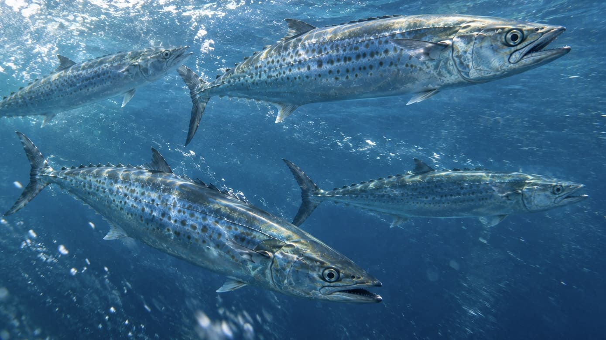
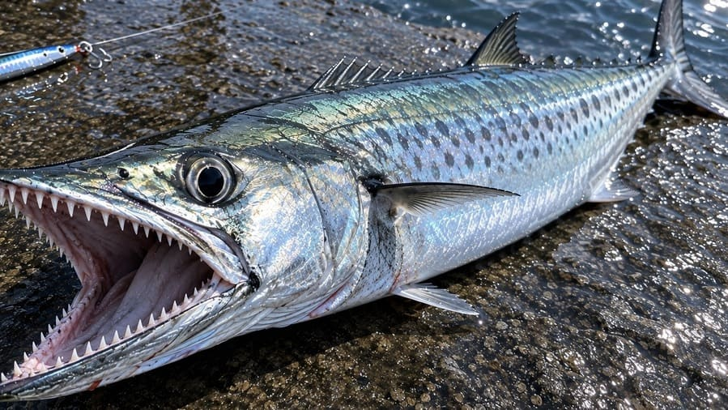

サワラ・サゴシのルアー釣り攻略ガイド：食わせるまでは大胆に、掛けたら主導権を渡さない

サワラ、サゴシは、ショアからルアーで狙えるフィッシュイーターの中でも特に豪快なターゲットです。細長い魚体からは想像できないほどのスピードで小魚を追い、ルアーにも非常に積極的に食いついてきます。一方で、サワラ・サゴシには他の魚種とは少し違った難しさがあります。それが、鋭い歯によるラインブレイクと、掛けた後の独特なファイトです。「サワラは歯が鋭いから太いリーダーを使えばいい」という説明は間違いではありませんが、それだけではサワラ・サゴシを確実に獲ることはできません。本当に重要なのは、掛けた後に魚へ主導権を渡さないことです。
サワラ・サゴシは非常に貪欲な魚
サワラ・サゴシは小魚を積極的に捕食するフィッシュイーターです。食いが立っているときは非常に貪欲で、ルアーのカラーを細かく選んでいるようには見えないことも少なくありません。シルバー、ブルー、ピンク、ゴールド、チャートなど、キラキラと目立って動くルアーであれば、かなり積極的に追ってくることがあります。
そのため、サワラ・サゴシを狙うときにカラー選びを必要以上に難しく考える必要はありません。食いが渋い状況や魚がスレている場合にはカラーによる違いが出る可能性もありますが、魚の活性が高い状況では、「何色を使うか」より「魚のいる場所へルアーを通せるか」のほうがはるかに重要です。サワラ・サゴシがいると分かったら、まずは自分が使っているルアーをそのまま投げてみてもいいでしょう。
そこで以下のポイントを確認します。
- どこまで追ってくるのか
- 表層なのか中層なのか
- 高速巻きに反応するのか
- 止めた瞬間に食うのか
- 足元まで追ってくるのか
サワラ・サゴシの「追い」を見ることは、その後の攻略にもつながります。
速いルアーに食いついてくる
サワラ・サゴシのルアー釣りでは、高速リトリーブが基本的な武器になります。ミノー、メタルジグ、ブレード系など、ルアーによって適した速度は違いますが、まずは速めに引いてみる価値があります。特にベイトを激しく追っているときには、かなりの速度でルアーを追ってくることがあります。
このとき重要なのは、「速く巻くこと」そのものではありません。魚が追いついてこられる速度で、ルアーを安定して動かすことです。ルアーが高速で泳いでいる途中に突然後ろからサワラが突っ込んでくる。これがサワラ・サゴシのルアー釣りの大きな魅力です。
高価なルアーをそのまま投げ続ける必要はない
サワラ・サゴシが追ってくることが確認できたら、もう一つ考えておきたいことがあります。それがルアーロストのリスクです。サワラ・サゴシの歯は非常に鋭く、ルアーに食いついた瞬間だけでなく、ファイト中にもリーダーへ歯が触れて切られることがあります。せっかく魚がいることが分かったのに、数千円するお気に入りのルアーをその一投で失う可能性もあります。
そこで、もし余裕があるなら、ダイソーなどの安価なルアーや、使い古したルアー、多少傷が付いても惜しくないルアーへ交換するという選択肢があります。これは「安いルアーだから釣れる」という話ではありません。サワラ・サゴシは食いが立っていれば、目立ってしっかり動くルアーにかなり積極的に反応します。つまり魚がいることを確認した後なら、「釣れるルアーを探す」より「ロストしても惜しくないルアーで積極的に攻める」という考え方ができます。
特にナブラが出ている、何度も追ってくる、周囲でも連発しているなど、魚の存在がはっきりしている状況では有効な考え方です。高価なルアーを失わないことより、魚がいる状況でいかに躊躇なくキャストできるかのほうが重要になる場面があります。
サワラだからといって、太いリーダーだけに頼らない
サワラ・サゴシ対策として、太いリーダーを使うことはもちろん一つの方法です。しかし、「太いリーダーだから切られない」と考えるのは危険です。
サワラ・サゴシを獲るうえで本当に重要なのは、掛けた後の魚の動きをコントロールすることです。特に重要なのが、首を振らせないこと。そして、方向転換させないことです。
掛けたら巻き続ける

サワラ・サゴシが掛かったら、基本的にはラインテンションを緩めず、巻き続けます。他の魚種では、魚を走らせたり、首振りをいなしたりしながらファイトを楽しむことがあります。しかし、サワラ・サゴシでは、それが逆効果になることがあります。
魚に自由を与えると、首を振る→方向転換する→ラインの角度が変わる→鋭い歯がリーダーに触れる→ラインブレイク、という展開になりかねません。どれだけ太いリーダーを使っていても、切られるときは切られます。だからこそ、掛けたら遊ばせない。これがサワラ・サゴシのファイトでは重要です。
魚を手前へ向かせる
掛けた後は、魚が走る方向へただ追従するのではなく、できるだけ魚を手前へ向かせます。ラインテンションを維持しながら巻き続け、魚に首を振らせたり、自由に方向転換させたりしない。サワラ・サゴシは細長い体型をしているため、うまくこちらを向かせてしまえば、意外なほどスムーズに足元まで寄せられることがあります。
そして足元まで寄せたら、ロッドのしなりを利用して、そのままの勢いで抜き上げる。魚に十分な自由を与えず、一気に勝負を決める。これがサワラ・サゴシの特徴を利用したファイトです。もちろんサイズやタックル、足場によってはタモを使うべき場合もありますが、サゴシ程度のサイズであれば、しっかり魚をこちらへ向かせてテンションを維持することで、驚くほどあっさり抜き上げられることがあります。
サビキ仕掛けでも獲れる理由
サワラ・サゴシは「歯が鋭いから細い仕掛けでは絶対に無理」と思われがちですが、実際にはサビキ仕掛けのような細い仕掛けでも、条件が整えば獲れることがあります。重要なのは仕掛けの太さだけではありません。魚に首を振らせず、方向転換させず、ラインテンションを維持したまま一気に寄せる。これができれば、魚がリーダーや仕掛けを噛む機会そのものを減らせます。
逆に、魚を自由に走らせ、何度も首を振らせてしまえば、太いリーダーを使っていても切られる可能性があります。サワラ・サゴシのファイトでは、「何lbのリーダーを使っているか」だけではなく、「魚に何をさせているか」を見ることが重要です。
サワラ・サゴシのルアー釣りは、シンプルだからこそ奥が深い
サワラ・サゴシのルアー釣りでは、魚を掛けるまでと掛けてからで考え方を切り替える必要があります。
掛けるまでは、魚やベイト、ナブラを探し、レンジを探り、速度やルアーを変えるというゲーム性があります。しかし、掛けた瞬間からは別です。魚に主導権を渡さず、ラインテンションを維持して巻き続ける。手前へ向かせたら一気に取り込む。この切り替えが非常に重要です。
サワラ・サゴシは、決して難しい魚ではありません。カラーを細かく悩むより魚を探す。高価なルアーに固執せず、必要なら安価なルアーへ替える。太いリーダーだけを頼りにしない。サワラ・サゴシのルアー釣りで大切なのは、必ずしも繊細なやり取りではありません。「食わせるまでは大胆に、掛けたら主導権を渡さず、一気に獲る。」この魚には、このくらい割り切った釣り方がよく似合います。